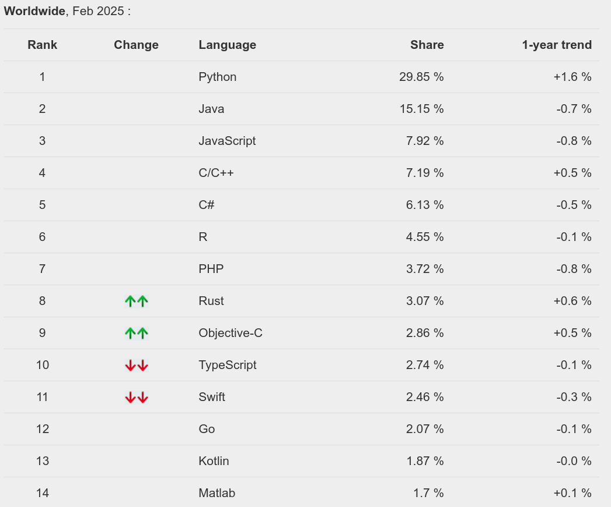
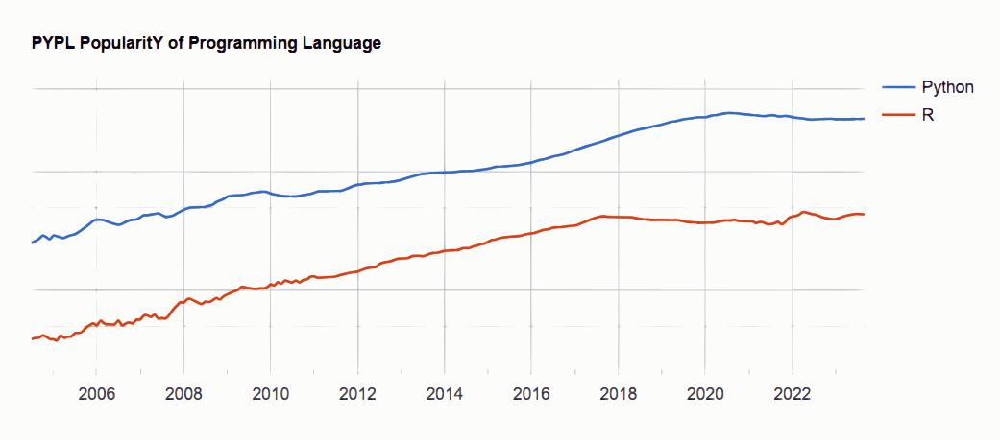
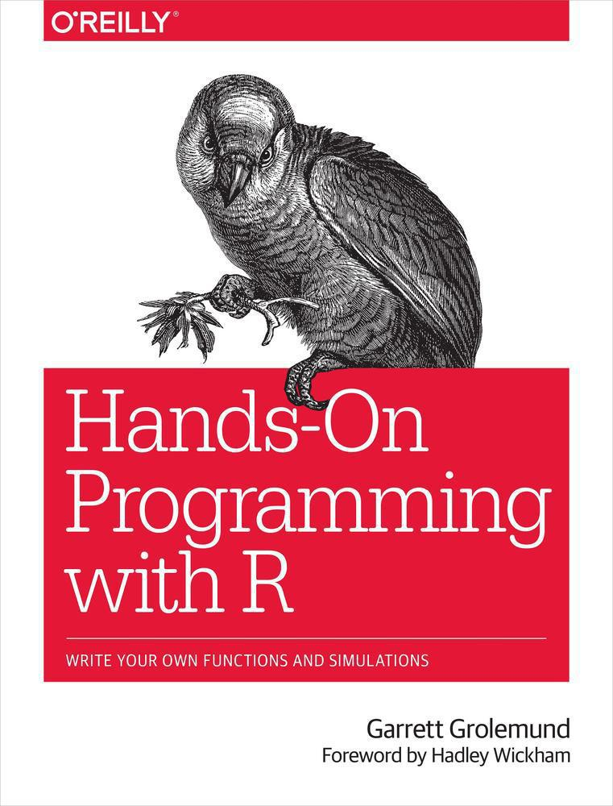
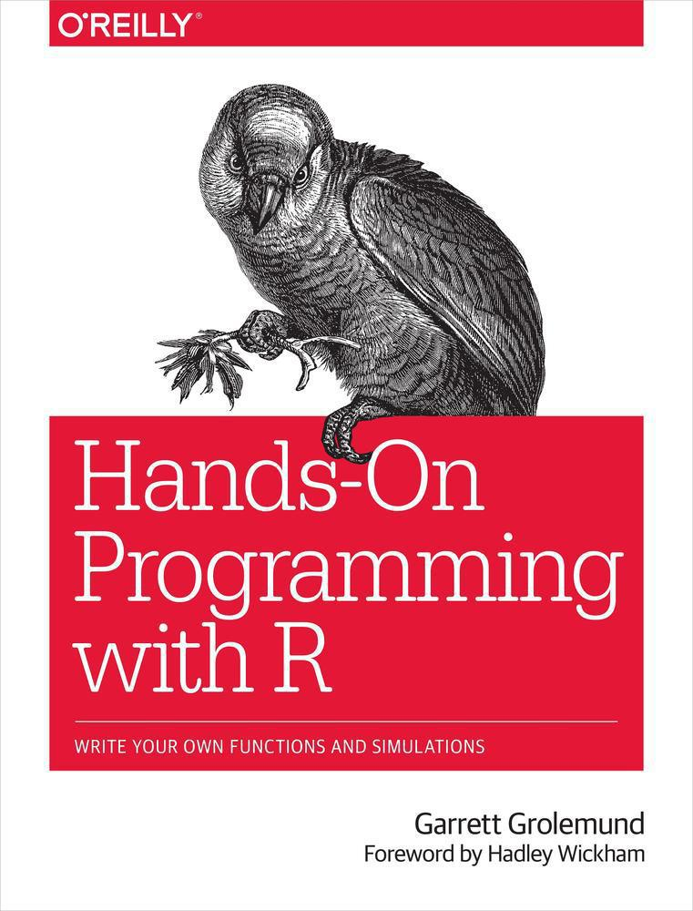
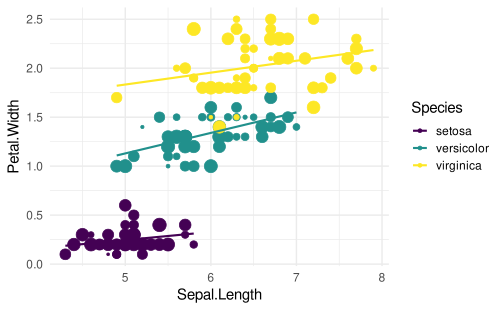
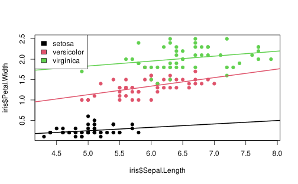
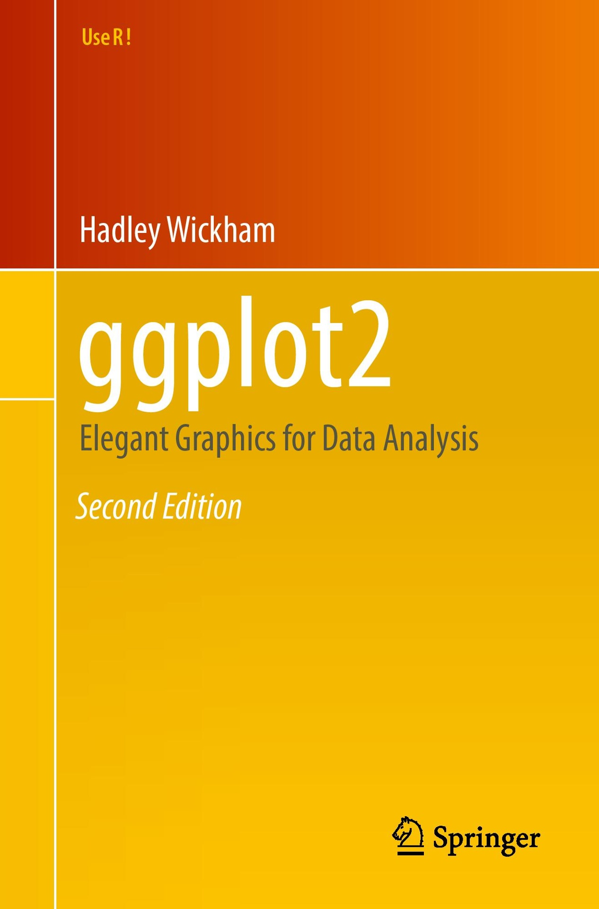
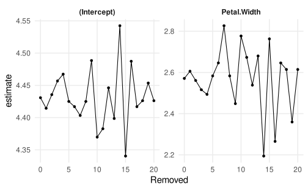

Modern R
Psicometria per le Neuroscienze Cognitive
Filippo Gambarota, PhD
Reproducibility starter pack
Reproducibility starter pack üë∑
- A general purpose (or flexible enough) programming language such as or
- A literate programming framework to integrate code and text
- A version control system to track projects
- An online repository for future-proof sharing
Disclaimers
- But there are some features that makes a tool better in terms of reproducibility, reducing the probability of errors and improve your coding skills.
- There is nothing bad about using SPSS, Jasp or Jamovi. The real problem is that using a point-and-click software reduce the reproducibility. If you can use the scripting part, whatever the tool.
- A general suggestion is to invest some of your time learning/improving a programming language for data pre-processing, analysis and reporting (tables, figures, etc.)
R Programming Language
R
R is a free software environment for statistical computing and graphics.
- (TBH) It is not a proper general purpose programming language (such as C++ or Python).
- R packages allow to do almost everything (file manager, image processing, webscraping, sending emails, coffee üòÑ, etc.)
- It is free and open-source
- The community is wide, active thus solving problems is very easy
- Force you to learn scripting but the are R-based GUI software (e.g., JAMOVI)
R - CRAN
The CRAN is the repository where package developers upload their packages and other users can install them.
As the saying goes: if something exist, there is an R package for doing it! üòÑ
R - PYPL Index
Source: https://pypl.github.io/PYPL.html
R - PYPL Index
The popularity is on a different scale compared to Python but still increasing:

R or Python?
- Python is a very general-purpose language more powerful for general tasks.
- I find python very useful for programming experiments, image processing, automatizing tasks and interacting with the operating system
- R is still a little bit superior in terms of data manipulation and visualization. Python is faster and more powerful for complex models (e.g., machine learning, etc.)
Positron
Sometimes Python is not so easy to setup. In addition is not as interactive as R (i.e., line by line evaluation). Posit (ex. R Studio) recently created Positron that is a new IDE working with R and Python at the same way.

Modern R
- For purist programmers, R is weird: arrays starts with 1, object-oriented programming is hidden, a lot of built-in vectorized functions, etc. The The R Inferno book is really funny showing the strange R-stuff.
- Despite the weirdness, R is widely used because it is intuitive (for non-programmers) and made for statistics and data manipulation
- R is a language and as in spoken languages you can elegant, rude, ambiguous, funny, etc.
- There are some tips to improve the readability and reproducibility of your code
Functional Programming
In computer science, functional programming is a programming paradigm where programs are constructed by applying and composing functions.
- Despite R can be used both with an imperative and object-oriented approach, the functional side is quite powerful.
- The basic idea is to decompose your code into small, testable and re-usable functions
Functional Programming, example…
We have a dataset (mtcars) and we want to calculate the mean, median, standard deviation, minimum and maximum of each column and store the result in a table.
#> mpg cyl disp hp drat wt qsec vs am gear carb
#> Mazda RX4 21.0 6 160 110 3.90 2.620 16.46 0 1 4 4
#> Mazda RX4 Wag 21.0 6 160 110 3.90 2.875 17.02 0 1 4 4
#> Datsun 710 22.8 4 108 93 3.85 2.320 18.61 1 1 4 1
#> Hornet 4 Drive 21.4 6 258 110 3.08 3.215 19.44 1 0 3 1
#> Hornet Sportabout 18.7 8 360 175 3.15 3.440 17.02 0 0 3 2
#> Valiant 18.1 6 225 105 2.76 3.460 20.22 1 0 3 1#> 'data.frame': 32 obs. of 11 variables:
#> $ mpg : num 21 21 22.8 21.4 18.7 18.1 14.3 24.4 22.8 19.2 ...
#> $ cyl : num 6 6 4 6 8 6 8 4 4 6 ...
#> $ disp: num 160 160 108 258 360 ...
#> $ hp : num 110 110 93 110 175 105 245 62 95 123 ...
#> $ drat: num 3.9 3.9 3.85 3.08 3.15 2.76 3.21 3.69 3.92 3.92 ...
#> $ wt : num 2.62 2.88 2.32 3.21 3.44 ...
#> $ qsec: num 16.5 17 18.6 19.4 17 ...
#> $ vs : num 0 0 1 1 0 1 0 1 1 1 ...
#> $ am : num 1 1 1 0 0 0 0 0 0 0 ...
#> $ gear: num 4 4 4 3 3 3 3 4 4 4 ...
#> $ carb: num 4 4 1 1 2 1 4 2 2 4 ...Functional Programming
The standard (~imperative) option is using a for loop, iterating through columns, calculate the values and store into another data structure.
ncols <- ncol(mtcars)
means <- medians <- mins <- maxs <- rep(0, ncols)
for(i in 1:ncols){
means[i] <- mean(mtcars[[i]])
medians[i] <- median(mtcars[[i]])
mins[i] <- min(mtcars[[i]])
maxs[i] <- max(mtcars[[i]])
}
results <- data.frame(means, medians, mins, maxs)
results$col <- names(mtcars)
results#> means medians mins maxs col
#> 1 20.090625 19.200 10.400 33.900 mpg
#> 2 6.187500 6.000 4.000 8.000 cyl
#> 3 230.721875 196.300 71.100 472.000 disp
#> 4 146.687500 123.000 52.000 335.000 hp
#> 5 3.596563 3.695 2.760 4.930 drat
#> 6 3.217250 3.325 1.513 5.424 wt
#> 7 17.848750 17.710 14.500 22.900 qsec
#> 8 0.437500 0.000 0.000 1.000 vs
#> 9 0.406250 0.000 0.000 1.000 am
#> 10 3.687500 4.000 3.000 5.000 gear
#> 11 2.812500 2.000 1.000 8.000 carbFunctional Programming
The main idea is to decompose the problem writing a function and loop over the columns of the dataframe:
Functional Programming
#> means medians mins maxs
#> 1 20.090625 19.200 10.400 33.900
#> 2 6.187500 6.000 4.000 8.000
#> 3 230.721875 196.300 71.100 472.000
#> 4 146.687500 123.000 52.000 335.000
#> 5 3.596563 3.695 2.760 4.930
#> 6 3.217250 3.325 1.513 5.424
#> 7 17.848750 17.710 14.500 22.900
#> 8 0.437500 0.000 0.000 1.000
#> 9 0.406250 0.000 0.000 1.000
#> 10 3.687500 4.000 3.000 5.000
#> 11 2.812500 2.000 1.000 8.000Functional Programming
The actual real functional way require using the built-in iteration tools *apply. In this way you avoid writing the verbose for loop.
#> means medians mins maxs
#> mpg 20.090625 19.200 10.400 33.900
#> cyl 6.187500 6.000 4.000 8.000
#> disp 230.721875 196.300 71.100 472.000
#> hp 146.687500 123.000 52.000 335.000
#> drat 3.596563 3.695 2.760 4.930
#> wt 3.217250 3.325 1.513 5.424
#> qsec 17.848750 17.710 14.500 22.900
#> vs 0.437500 0.000 0.000 1.000
#> am 0.406250 0.000 0.000 1.000
#> gear 3.687500 4.000 3.000 5.000
#> carb 2.812500 2.000 1.000 8.000Functional Programming, *apply
- The
*applyfamily is one of the best tool in R. The idea is pretty simple: apply a function to each element of a list. - The powerful side is that in R everything can be considered as a list. A vector is a list of single elements, a dataframe is a list of columns etc.
- Internally, R is still using a
forloop but the verbose part (preallocation, choosing the iterator, indexing) is encapsulated into the*applyfunction.
for loops are bad?
for loops are the core of each operation in R (and in every programming language). For complex operation thery are more readable and effective compared to *apply. In R we need extra care for writing efficent for loops.
Extremely slow, no preallocation:
Very fast, no difference compared to *apply
for loops are bad?
We can formally compare the for loop approaches using the microbenchmark package:
no_prealloc <- function(n = 100){
res <- c()
for(i in 1:n) res[i] <- rnorm(1)
}
prealloc <- function(n = 100){
res <- vector(mode = "numeric", length = n)
for(i in 1:n) res[i] <- rnorm(1)
}
microbenchmark::microbenchmark(
no_prealloc = no_prealloc(1000),
prealloc = prealloc(1000)
)#> Unit: microseconds
#> expr min lq mean median uq max neval cld
#> no_prealloc 848.225 872.0795 1010.1748 884.2175 918.5970 4462.520 100 a
#> prealloc 648.589 663.1315 711.0051 668.4970 681.6215 2821.114 100 bfor loops are bad?
In fact, when the for loop is written appropriately, the performance are the same (or even better) compared to *apply:
library(purrr) # for map
iter <- 500
microbenchmark::microbenchmark(
for_no_prealloc = no_prealloc(iter),
for_prealloc = prealloc(iter),
sapply = sapply(1:iter, function(x) rnorm(1)),
map_dbl = map_dbl(1:iter, function(x) rnorm(1)),
vapply = vapply(1:iter, function(x) rnorm(1), FUN.VALUE = double(1)),
times = 500
) |> summary()#> expr min lq mean median uq max neval
#> 1 for_no_prealloc 427.404 444.7960 479.5039 452.2905 463.0960 4068.079 500
#> 2 for_prealloc 321.355 330.5470 347.4882 334.3735 339.7890 4380.626 500
#> 3 sapply 588.496 607.2065 652.3096 618.3775 633.7065 5153.349 500
#> 4 map_dbl 610.588 630.8610 697.8509 645.0725 679.1320 4740.082 500
#> 5 vapply 579.730 591.2970 635.9248 598.4200 607.1715 4754.439 500
#> cld
#> 1 a
#> 2 b
#> 3 cd
#> 4 c
#> 5 dWith *apply you can do crazy stuff!
funs <- list(mean = mean, sd = sd, min = min, max = max, median = median)
sapply(funs, function(f) lapply(mtcars, function(x) f(x)))#> mean sd min max median
#> mpg 20.09062 6.026948 10.4 33.9 19.2
#> cyl 6.1875 1.785922 4 8 6
#> disp 230.7219 123.9387 71.1 472 196.3
#> hp 146.6875 68.56287 52 335 123
#> drat 3.596563 0.5346787 2.76 4.93 3.695
#> wt 3.21725 0.9784574 1.513 5.424 3.325
#> qsec 17.84875 1.786943 14.5 22.9 17.71
#> vs 0.4375 0.5040161 0 1 0
#> am 0.40625 0.4989909 0 1 0
#> gear 3.6875 0.7378041 3 5 4
#> carb 2.8125 1.6152 1 8 2Why functional programming?
- We can write less and reusable code that can be shared and used in multiple projects
- The scripts are more compact, easy to modify and less error prone (imagine that you want to improve the
summfunction, you only need to change it once instead of touching theforloop) - Functions can be easily and consistently documented (see roxygen documentation) improving the reproducibility and readability of your code
More about functional programming in R
- Advanced R by Hadley Wickham, section on Functional Programming (https://adv-r.hadley.nz/fp.html)
- Hands-On Programming with R by Garrett Grolemund https://rstudio-education.github.io/hopr/
- Hadley Wickham: The Joy of Functional Programming (for Data Science)
- Bruno Rodrigues Youtube Channel
 

A small example
A small example
Take the dataset iris and do the following operations in the most readable and efficient way that you can.
- fit a linear model (choose the
yandxthat you want) for eachSpecieson the full dataset - fit a linear model (choose the
yandxthat you want) for eachSpeciesbut resampling with replacement (bootstrapping, choose the number of iterations that you want) the rows within each group - (choose the
yandxthat you want) for eachSpeciesdoing a leave-one-out analysis within each group - organize the three steps into separated datasets in a nice and readable format (nice column names, not strange characters, spaces, etc.)
- show the results with a plot of your choice
A more advanced approach, R packages
R packages are not only on CRAN. You can (pretty) easily create a package and put it on Github. For example, if you keep using some functions in your project, write a general version and put them into a package.

A more advanced approach, R packages
If your functions are project-specific you can define them into your scripts or write some R scripts only with functions and source() them into the global environment.
project/
├─ R/
│ ├─ utils.R
├─ analysis.RAnd inside utils.R you have some functions:
Then you can load the function using source("R/utils.R) at the beginning of analysis.R:
Analysis project as R package
The R project structure is really interesting to organize a data analysis pipeline. In fact, you can use the project structure. Vuorre and Crump (2021) and Marwick, Boettiger, and Mullen (2018) describe in details the idea.
The general approach is:
- Create an R Studio project
.Rprojfile - Create your directories, put scripts, data, etc.
- Create an
R/folder and put your scripts with functions - Create a
DESCRIPTIONfile usingusethis::use_description(check_name = FALSE) - Then you can load your functions without source and with
devtools::load_all()(same aslibrary())
Let’s see an example!
The Tidy approach
The tidyverse is a series of high-quality R packages to do modern data science:
- data manipulation (
dplyr,tidyr) - plotting (
ggplot2) - reporting (
rmarkdown) - string manipulation (
stringr) - functionals (
purrr) - …

The Tidy approach - Pipes
One of the great improvement from the tidyverse is the usage of the pipe %>% now introduced in base R as |>. You will se these symbols a lot when looking at modern R code.
The idea is very simple, the standard pattern to apply a function is function(argument). The pipe can reverse the pattern as argument |> function(). Normally when we apply multiple functions progressively the pattern is this:
The Tidy approach - Pipes
When using the pipe, we remove the redundand assignment <- pattern:
The pipe can be read as “from x apply round, then abs, etc.”. The first argument of the piped function is assumed to be the result of the previus call.
More about the Tidy approach
The tidy approach contains tons of functions and packages. The overall philosophy can be deepen in the R for Data Science book.
ggplot2
Only an quick mention to ggplot2 https://ggplot2-book.org/ (part of the tidyverse) that is an amazing package for data visualization following the piping and tidy approach. Is the implementation of the grammar of graphics idea.
ggplot2
Base R version
More verbose, more hard coding, more steps and intermediate objects.
iris_l <- split(iris, iris$Species)
lms <- lapply(iris_l, function(x) lm(Petal.Width ~ Sepal.Length, data = x))
plot(iris$Sepal.Length,
iris$Petal.Width,
col = as.numeric(iris$Species), pch = 19)
abline(lms[[1]], col = 1, lwd = 2)
abline(lms[[2]], col = 2, lwd = 2)
abline(lms[[3]], col = 3, lwd = 2)
legend("topleft", legend = levels(iris$Species), fill = 1:3)Base R version
More on ggplot2
The ggplot2 book https://ggplot2-book.org/ is a great resource to produce high-quality, publication ready plots. Clearly, the advantage of producing the figures entirely writing code are immense in terms of reusability and reproducibility.


Something crazy in the tidyverse
Without going into details, I want to show you a very interesting approach that you can do with the tidyverse functions.
Let’s assume you want to do a leave-one-out analysis thus fitting the same models on a dataset, removing one observation at time.
You can do it in base R with a loop or other methods, but the see so-called many-models approach. See https://r4ds.had.co.nz/many-models.html and https://www.youtube.com/watch?v=rz3_FDVt9eg.
Something crazy in the tidyverse
Let’s define some functions:
Something crazy in the tidyverse
Something crazy in the tidyverse
#> # A tibble: 6 × 4
#> data removed fit results
#> <named list> <chr> <named list> <named list>
#> 1 <df [20 × 5]> no0 <lm> <tibble [2 × 5]>
#> 2 <df [19 × 5]> no1 <lm> <tibble [2 × 5]>
#> 3 <df [19 × 5]> no2 <lm> <tibble [2 × 5]>
#> 4 <df [19 × 5]> no3 <lm> <tibble [2 × 5]>
#> 5 <df [19 × 5]> no4 <lm> <tibble [2 × 5]>
#> 6 <df [19 × 5]> no5 <lm> <tibble [2 × 5]>Something crazy in the tidyverse
Something crazy in the tidyverse
Quick tables
| Characteristic | N = 1501 |
|---|---|
| Sepal.Length | 5.80 (5.10, 6.40) |
| Sepal.Width | 3.00 (2.80, 3.30) |
| Petal.Length | 4.35 (1.60, 5.10) |
| Petal.Width | 1.30 (0.30, 1.80) |
| Species | |
| setosa | 50 (33%) |
| versicolor | 50 (33%) |
| virginica | 50 (33%) |
| 1 Median (IQR); n (%) | |